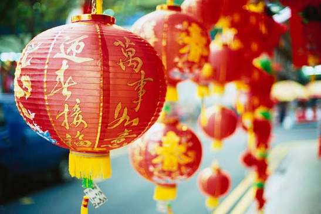

เทศกาลตรุษจีน

ตรุษจีนคือวันขึ้นปีใหม่ตามปฏิทินจันทรคติของจีนหรือที่เรียกว่า"เทศกาลฤดูใบไม้ผลิ"ถือเป็นเทศกาลที่สำคัญและยิ่งใหญ่ที่สุดของชาวจีนและชาวไทยเชื้อสายจีน

ตรุษจีนคือวันขึ้นปีใหม่ตามปฏิทินจันทรคติของจีนหรือที่เรียกว่า"เทศกาลฤดูใบไม้ผลิ"ถือเป็นเทศกาลที่สำคัญและยิ่งใหญ่ที่สุดของชาวจีนและชาวไทยเชื้อสายจีน